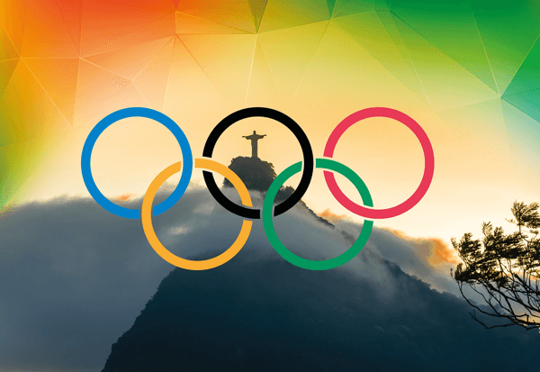
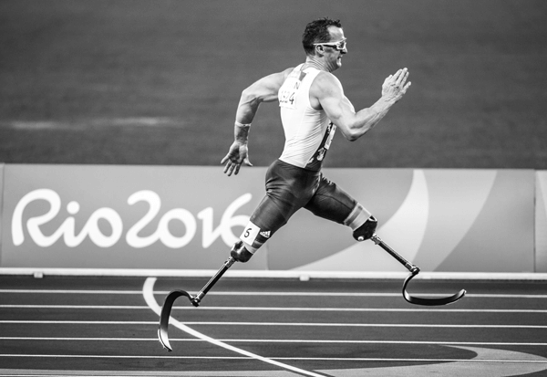

Rio 2016 - Summer Olympics Games
The 2016 Summer Olympics officially known as the Games of the XXXI Olympiad and commonly known as Rio 2016, was a major international multi-sport event held in Rio de Janeiro, Brazil, from 5 August to 21 August 2016.
More than 11,000 athletes from 205 National Olympic Committees, including first time entrants Kosovo, South Sudan, and the Refugee Olympic Team, took part. With 306 sets of medals, the games featured 28 Olympic sports, including rugby sevens and golf, which were added to the Olympic program in 2009. These sporting events took place at 33 venues in the host city, and at five in São Paulo, Belo Horizonte, Salvador, Brasília, and Manaus.
The host city Rio de Janeiro was announced at the 121st IOC Session in Copenhagen, Denmark, on 2 October 2009. Rio became the first South American city to host the Summer Olympics. These were the first games to be held in a Portuguese-speaking country, the first to be held entirely in the host country's winter, the first since 1968 to be held in Latin America, and the first since 2000 to be held in the Southern Hemisphere.
The lead-up to these Games was marked by controversies, including the instability of the country's federal government; health and safety concerns surrounding the Zika virus and significant pollution in the Guanabara Bay; and a doping scandal involving Russia, which has affected the participation of its athletes in the Games.
The United States topped the medal table for the fifth time in the past six Summer Olympics, winning the most golds (46) and most medals overall (121), as well as its 1,000th Olympic gold medal overall. Great Britain finished second and became the first country in the history of the modern Olympics to increase its tally of medals in the subsequent games after being the host nation. China finished third. Host country Brazil won seven gold medals, its most at any single Summer Olympics, finishing in thirteenth place. Fiji, Jordan, Kosovo, Puerto Rico, Singapore, Tajikistan, Ivory Coast and Vietnam each won their first gold medals, as did the group of Independent Olympic Athletes (from Kuwait).
2016 Summer Paralympics
The 2016 Summer Paralympics, the fifteenth Summer Paralympic Games, were a major international multi-sport event for athletes with disabilities governed by the International Paralympic Committee, held in Rio de Janeiro, Brazil, from 7 September to 18 September 2016. The lead-up to these Paralympics were met with financial shortcomings attributed to tepid sponsor interest and ticket sales, which resulted in cuts to volunteer staffing and transport, the re-location of events and the partial deconstruction of the Deodoro venue cluster. However, ticket sales began to see increases as the Games drew nearer; on 14 September 2016, the IPC announced that over 2 million tickets had been sold—overtaking Beijing 2008 as the second-most-attended Paralympic Games ever.